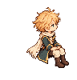

Little Prince — seated pose correction
Quiet, thoughtful stool-perch: separate relaxed hands, a small stagger between knees and boots, and a less rigid shoulder line. Same character, costume and side-quarter direction.
Only the Q1 seated texture changes. Camera, character scale, stool, contact anchors, counter geometry and ACT 1 logic are retained. Final pose feel remains for owner review.
Before · original production sprite
After · corrected production sprite
Sprites above are displayed at 4× with nearest-neighbor scaling. Both have the original 96×100 transparent frame and 76-pixel silhouette height.
Native Q1 grounding view · same camera and stool
Before · retained Q1 evidence After · rebuilt Player
After · rebuilt Player
Normal Q1 composition

Native Player captures at 720p and 1080p were inspected. Unity build: zero errors/warnings. Existing Q1 tests: 7/7. Bounded Prince service/save/Continue checks: 16 passed. Click a native render to inspect the full-resolution image. This is pose review, not a new ACT 1 sign-off.
Validation and review notes · Source and exact generation prompt